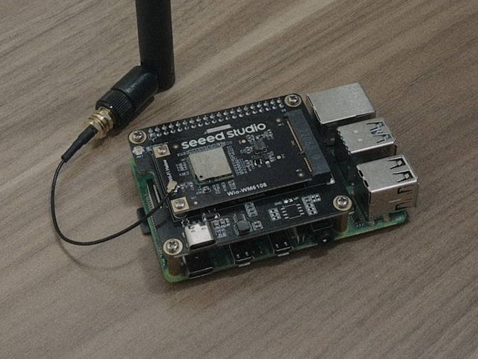

OTA testing of near-real-time RAW optimization algorithms
RAW optimization papers typically evaluate their algorithms in a simulator like ns3 or MATLAB. For large-scale tests, this is necessary-- buying dozens or even hundreds of STAs is quite expensive. However, simulation-based evaluations still raise the question of how do you implement this on real hardware? Such papers do not mention it, and if they do, they gloss over it.
This entry investigates what it's like actually implementing a RAW optimization algorithm on a COTS IEEE 802.11ah AP. I will be using a Raspberry Pi 4 + WiFi HaLow Mini PCIe module running a custom OpenWRT installation. The algorithm of choice is the Soft Actor Critic algorithm, for reasons I will explain later in this entry..

The Raspberry Pi 4 is wearing a WM1302 Raspberry Pi Hat (Mini PCIe to PCIe adapter) with the WiFi HaLow mini PCIe module attached. The antenna is cropped out.
Near-real-time RAW optimization on COTS AP
On OpenWRT configured for IEEE 802.11ah, it is actually quite simple to configure the RAW. You simply run
morse_cli raw -s [duration_μs],[num_slots] -a [aid_start],[aid_end] -t [start_time_μs] enable [raw_id]
An interesting implementation detail of OpenWRT's RAW driver is that it specifies RAW groups by AID
ranges. This is simple to implement, but becomes complicated if you want to do something fancy like
dynamic RAW group reassignment. IEEE 802.11ah has specified a RAW reassignment frame since 2016, but
morse_driver seems to be noncompliant in this regard.
morse_driver seems to expose a
plethora of KPIs we can use, accessible by running iw dev wlan0 station dump. I won't list everything that is exposed, but there are important KPIs that are directly accessible in or may be derived from the output:
- Expected throughput of a STA including header
- Packet drop ratio
If you want to see ALL KPIs that are exposed in the morse_driver, read morse_cli/transport/nl80211_copy.h
The candidate algorithm
Let's consider this problem a Markov Decision Process. You can find resources on Markov Decision Processes online.
Why choose Proximal Policy Optimization?
Consider these factors:
- Online learning: In this project, RAW optimization is learned online, that is, through continuous trial-and-error with the environment. While Proximal Policy Optimization is ont as sampl-efficient as, say, Soft Actor Critic, it excels in that it does not need to retain MDP transitions to learn from. It simply takes a rollout and tosses it out after it's done with that learning step. This becomes even more attractive when you consider the memory and compute constraints of the Raspberry Pi 4-- four gigabytes of RAM at maximum, and inference + learning must be done quite quickly.
- Simplicity of implementation: This is subjective. But PPO is a few lines of Python, essentially. If you want to make something like SAC truly viable, you have to implement a Prioritzed Replay Buffer using a sum tree, dealing with OOM errors, sampling from the buffer, and so on. It becomes a headache.
Action
For simplicity's sake, the action space is a \( \boldsymbol{\alpha}=\{\alpha_1,\alpha_2,\dots,\alpha_k\} \)vector, where \( \forall \alpha_i \in \boldsymbol{\alpha}, 0<\alpha_i\) and \(k\) is the number of RAW groups defined. These are parameters for a Dirichlet probability distribution. From here we sample from the distribution to get the proportion of the beacon interval to allocate to each RAW group defined by the operator. A controller takes this as input and translates them into workable RAW reconfiguration commands, i.e., start times, durations.
Reward
The reward can be simple. Here, we just want to maximize throughput and minimize the packet drop rate, i.e., enhance reliability and datarate of the network. Take \(r_t\) to be the reward observed at step \(t\), \(y_i,p_i\) to be the packet drop ratio and expected throughput respectively of the \(i\)th STA, and \(n\) to be the number of STAs associated with the AP, $$ r_t = a_1 \frac{\sum_{i=1}^n y_i}{n} + a_2 \frac{\sum_{i=1}^n a_i}{n} $$
State
It is important for the model to have the minimal necessary state to maximize the reward. For simplicity, I'll be using a permutation-invariant operator to aggregate packet loss and throughput KPIs gathered from the STAs.